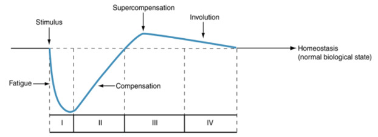

By Paavo Nyländen
15 Dec 2024
Athletes are always looking for ways to recover faster from physical exercise to maximize their training and performance. Since exercise adaptations often follow a dose-response effect, the ability to recover efficiently can significantly impact progress. But what exactly does recovery mean from a physiological perspective? And how can you determine when you've recovered enough?
The concept of supercompensation explains how the body adapts to exercise. A single workout induces fatigue, disrupting homeostasis and temporarily reducing performance. Supercompensation refers to the process by which the body not only recovers from this fatigue but also adapts to reach a slightly higher performance level than before. However, if no additional training stimulus is introduced, this improved state will gradually return to baseline. With consistent and appropriately timed training sessions, performance can progressively improve through repeated cycles of supercompensation.
This principle applies not only to individual workouts but also to long-term training adaptations. However, it's important to note that continuous performance gains are not infinite. In highly trained athletes, improvements tend to follow a nonlinear pattern and become more challenging to achieve over time.
From a practical standpoint, athletes aim to shorten the recovery phase to train more frequently and enhance their development. Faster recovery is also a competitive advantage in sports that require multiple performances in succession. However, since the concept of supercompensation is somewhat theoretical, how can recovery be measured in real-world scenarios?
The most direct method is to assess performance in a specific task, whether related to strength, power, or endurance. However, this is not always feasible, so other physiological markers are often used. Various biomarkers reflect physiological changes caused by exercise. For example, cortisol, a catabolic hormone, increases in response to prolonged, intense training. Testosterone, on the other hand, has opposing effects to cortisol. Monitoring the testosterone-to-cortisol (T:C) ratio can provide insights into an athlete’s recovery status.
Heart rate variability (HRV) measures the variation in time between heartbeats, reflecting the balance between sympathetic (stress-related) and parasympathetic (recovery-related) nervous system drive. A decrease in HRV typically indicates higher stress or fatigue, while an increase suggests better recovery. Similarly, an elevated resting heart rate compared to an individual's baseline can signal high sympathetic activity and prolonged stress. The orthostatic test is also used for this purpose.
Despite the availability of physiological markers, an athlete’s subjective feeling of readiness is also a valuable recovery indicator. A combination of objective measurements and perceived recovery should be considered for the most accurate assesment.
It goes without saying that the cornerstones of better recovery lie in intelligent programming, nutrition and sleep. However, athletes might also be interested in spesific solutions like cold water immersion, contrast therapy, sensory deprivation, massage, active recovery etc. Here is what the research has to say about this.
Active recovery refers to light physical activity performed between exercise sessions or bouts to accelerate recovery from more intense exertion. The primary mechanism behind this approach, in the short term, is believed to be increased blood flow, which helps clear metabolic byproducts and improves pH buffering. A review by Ortiz et al. (2019) found that active recovery interventions lasting 6–10 minutes consistently had positive effects on performance. Similarly, a study by Nalbandian et al. (2017) reported that participants who followed an active recovery protocol after intense 30-second exercise bouts had significantly higher blood pH levels compared to those who remained passive. However, the study did not find a direct correlation between these pH levels and subsequent performance in a Wingate test. More broadly, an umbrella review by Li et al. (2024) concluded that active recovery strategies effectively enhance lactate clearance in endurance athletes. However, their impact on overall performance remained less clear.
Cold-water immersion (CWI) is one of the most commonly used passive recovery methods among athletes. It is believed to aid recovery by reducing muscle damage and inflammation through various physiological mechanisms. However, while inflammation is often seen as detrimental, it also plays a crucial role in stimulating training adaptations at the cellular level. Research suggests that frequent and prolonged use of CWI may actually hinder strength training adaptations. Interestingly, this negative effect does not appear to extend to aerobic performance (Malta et al., 2020). That said, CWI can provide immediate benefits, such as reducing perceived exertion, alleviating muscle soreness, and lowering biomarkers, such as creatine kinase (indicator of muscle damage). However, these short-term benefits contrast with its potential drawbacks, as performance measures like the countermovement jump have been shown to acutely decrease following CWI. (Xiao et al. 2023)
In contrast to CWI, heat therapy has also been proposed as a recovery strategy. It is believed to promote recovery by increasing local blood flow, reducing inflammation, enhancing glycogen resynthesis, and stimulating mitochondrial biogenesis. However, the evidence supporting these benefits remains limited (Thorpe, 2021). Another approach is contrast therapy, which alternates between hot and cold exposure. A review by Greenhalgh et al. (2020) found that while this method can improve subjective feelings of fatigue, its effects on physiological markers and performance outcomes are less clear. Protocols vary widely, but temperatures between 10–15°C for cold exposure and 38–40°C for heat exposure appear to be the most effective for temperature-based treatments.
Soft tissue massage and foam rolling are also popular passive recovery methods. A comprehensive review by Dakic et al. (2023), which analyzed 114 studies, found that massage does not significantly impact neuromuscular performance, blood flow, or lactate clearance. However, it does appear to reduce muscle soreness, fatigue perception, and pain. There may also be slight performance benefits for endurance athletes, likely due to psychological factors.
Other recovery strategies include compression garments, hyperbaric oxygen therapy, sensory deprivation, and neuromuscular electrical stimulation (NEMS). Compression therapy is thought to aid recovery by enhancing blood flow and metabolic waste removal, while oxygen therapy is believed to reduce edema and inflammation—both similar to temperature treatments. Some studies suggest these methods may offer benefits, though the evidence remains inconclusive. In contrast, NEMS does not appear to accelerate recovery but may help reduce pain perception (Cullen et al., 2021).
Overall, some specialized recovery strategies may provide benefits, particularly when tailored to specific needs. Light aerobic activity between high-intensity efforts can enhance recovery and might be useful in certain competitive settings. Temperature-based treatments and other passive methods can also be effective in some situations, provided their potential downsides are considered.
That said, the underlying mechanisms behind many of these strategies remain unclear, and much of their perceived effectiveness may be psychological. Fatigue itself is a complex psychophysical phenomenon, making objective recovery assessments challenging. When interpreting research findings and choosing recovery methods, careful consideration is essential. After all, managing fatigue is the ultimate goal of any recovery strategy.
Cullen ML, Casazza GA, Davis BA. Passive Recovery Strategies after Exercise: A Narrative Literature Review of the Current Evidence. Curr Sports Med Rep. 2021 Jul 1;20(7):351-358. doi: 10.1249/JSR.0000000000000859. PMID: 34234090.
Dakić, M., Toskić, L., Ilić, V., Đurić, S., Dopsaj, M., & Šimenko, J. (2023). The Effects of Massage Therapy on Sport and Exercise Performance: A Systematic Review. Sports, 11(6), 110. https://doi.org/10.3390/sports11060110
Greenhalgh, O., Alexander, J., Richards, J., Selfe, J., & McCarthy, C. (2020). The use of contrast therapy in soft tissue injury management and post-exercise recovery: a scoping review. Physical Therapy Reviews, 26(1), 64–72. https://doi.org/10.1080/10833196.2020.1850163
Lee, E. C., Fragala, M. S., Kavouras, S. A., Queen, R. M., Pryor, J. L., & Casa, D. J. (2017). Biomarkers in Sports and Exercise: Tracking Health, Performance, and Recovery in Athletes. Journal of Strength and Conditioning Research, 31(10), 2920–2937. doi: 10.1519/JSC.0000000000002122
Li, S., Kempe, M., Brink, M., & Lemmink, K. (2024). Effectiveness of Recovery Strategies After Training and Competition in Endurance Athletes: An Umbrella Review. Sports Medicine - Open, 10(1), 55. doi: 10.1186/s40798-024-00724-6
Nalbandian, H. M., Radak, Z., & Takeda, M. (2017). Active Recovery between Interval Bouts Reduces Blood Lactate While Improving Subsequent Exercise Performance in Trained Men. Sports, 5(2), 40. https://doi.org/10.3390/sports5020040
Malta, E. S., Dutra, Y. M., Broatch, J. R., Bishop, D. J., & Zagatto, A. M. (2021). The Effects of Regular Cold-Water Immersion Use on Training-Induced Changes in Strength and Endurance Performance: A Systematic Review with Meta-Analysis. Sports Medicine, 51(1), 161–174. doi: 10.1007/s40279-020-01362-0
Ortiz RO Jr, Sinclair Elder AJ, Elder CL, Dawes JJ. A Systematic Review on the Effectiveness of Active Recovery Interventions on Athletic Performance of Professional-, Collegiate-, and Competitive-Level Adult Athletes. J Strength Cond Res. 2019 Aug;33(8):2275–2287. doi: 10.1519/JSC.0000000000002589. PMID: 29742750.
Thorpe, R. T. (2021). Post-exercise Recovery: Cooling and Heating, a Periodized Approach. Frontiers in Sports and Active Living, 3, 707503. doi: 10.3389/fspor.2021.707503
Xiao F, Kabachkova AV, Jiao L, Zhao H and Kapilevich LV (2023), Effects of cold water immersion after exercise on fatigue recovery and exercise performance-- meta analysis. Front. Physiol. 14:1006512. doi: 10.3389/fphys.2023.1006512